-PROJETS-
Projet Fansite
Avec mon groupe, nous avons développer un site web de fans regroupant nos célébrités préférerées.
Figma
Nous avons d'abord utiliser Figma afin de réaliser la maquette du site web en format mobile...
Lire plus
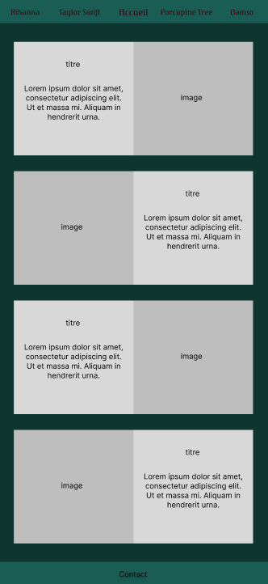
...puis en format bureau.
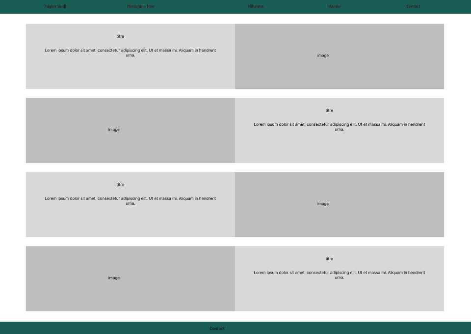
Ensuite, chacun de notre côté, nous avons ajouté les informations de la célébrité de notre choix à l'endroit indiqué (image et titre) sur format mobile...
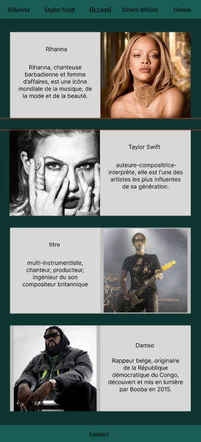
puis à nouveau en format bureau.
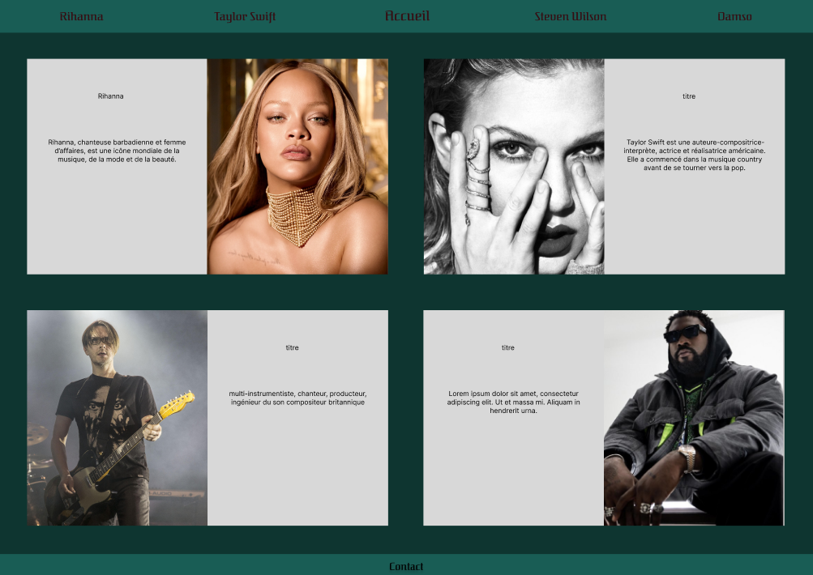
Trello
Afin de bien répartir les tâches, nous avons créer un trello avec une liste de choses à faire.
Lire plus
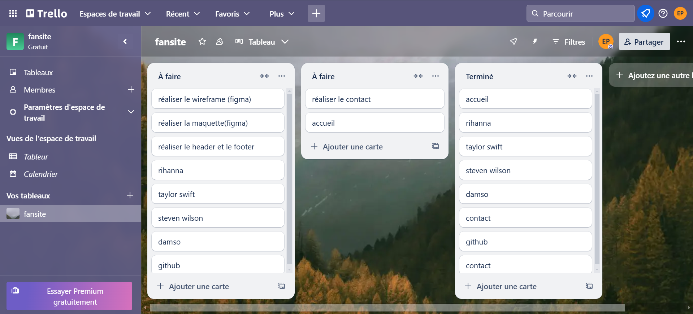
Fansite
Après ça, nous avons réalisé l'accueil du site web en format mobile...
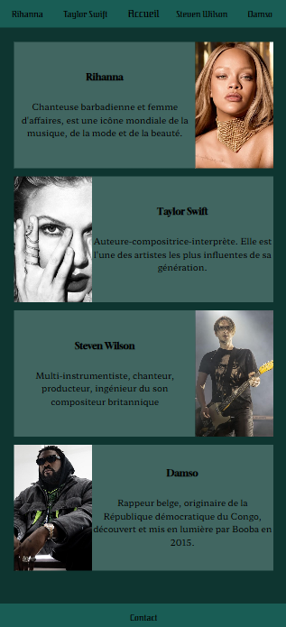
...puis en format bureau.
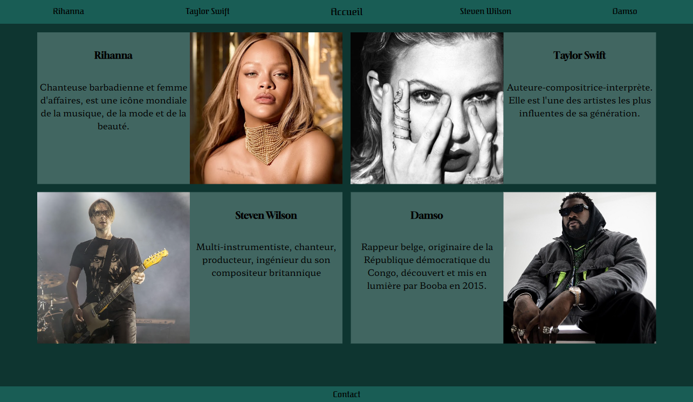
Voici une partie du fansite que j'ai réalisé sur Taylor Swift en format mobile...
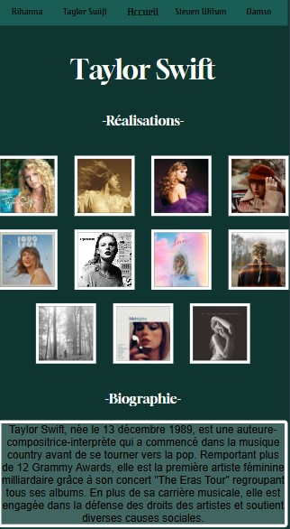
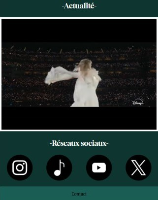
...puis en format bureau.
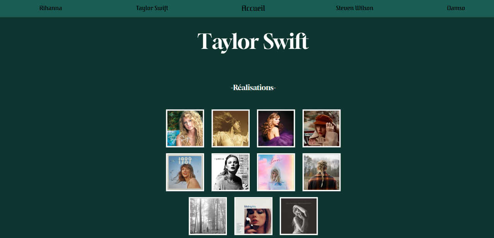
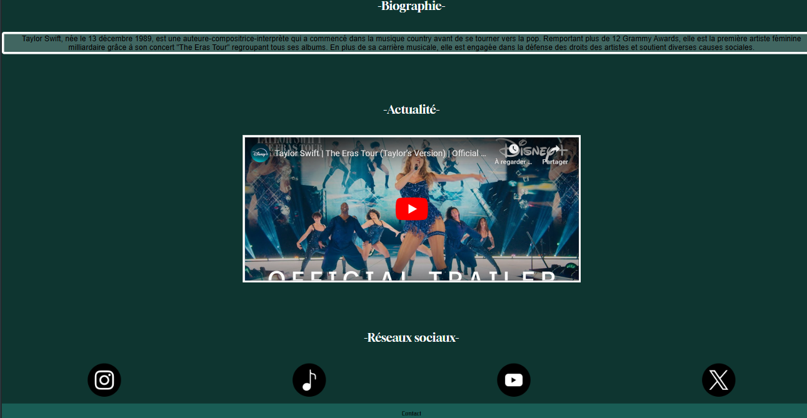
La petite spécifité que j'ai ajouté c'est que lorsque l'utiliseur cliquera sur, par exemple, la première image, une page spotify s'ouvrira sur l'album en question. Ensuite, j'ai ajouté une petite biographie.
En dessous j'ai intégré la bande annonce du film de son concert appelé "The Eras Tour" qui est sorti le 14 mars 2024.
Puis, même chose que pour les photos, lorsque l'utilisateur cliquera sur la première image, la page Instagram de Taylor Swift s'ouvrira.
Pour finir, nous avons créé une page contact afin que l'utilisateur puisse entrer ses informations personnelles en format mobile...
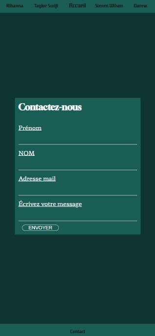
...puis en format bureau.
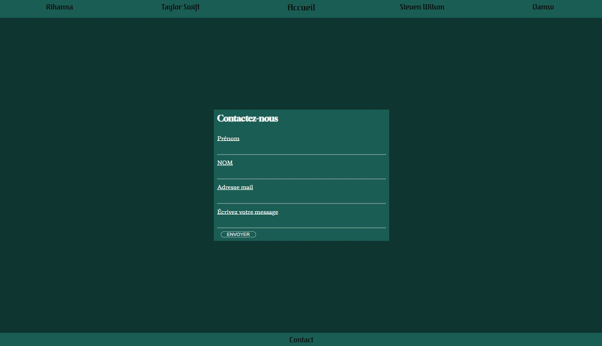